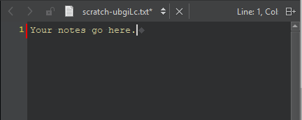

Write down notes
To write down notes without having to worry about deleting the file later, create a new empty text file and save it to a temporary directory on your machine.

To create a scratch file and open it in the text editor:
- Select File > New File > General > Scratch Buffer.
- Press Ctrl+N.
Use the up and down arrow keys and the tab key to navigate in the editor.
The operating system will eventually remove the file automatically. To keep the file, save it as a new file somewhere else. If you accidentally close the file, find it in File > Recent Files.